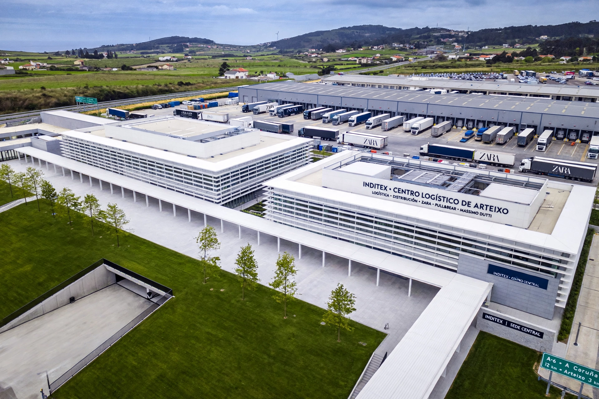

From Wikipedia, the free encyclopedia
| Industria de Diseño Textil, S.A. | |
|---|---|
 | |
| Founded | 12 June 1985, Arteixo, Spain |
| Founders | Amancio Ortega; Rosalía Mera |
| Headquarters | Arteixo, Galicia, Spain |
| Brands | Zara, Massimo Dutti, Bershka, Pull&Bear, Stradivarius, Oysho, Zara Home |
Inditex (Industria de Diseño Textil, S.A.) is a Spanish multinational clothing company headquartered in Arteixo, Galicia. It is one of the world's largest fashion retail groups and the owner of Zara. Founded in 1985 by Amancio Ortega and his first wife Rosalía Mera, it pioneered the fast fashion model of rapid design-to-store turnover supported by proximity manufacturing and centralised logistics.
Ortega began making dressing gowns in the 1960s and opened the first Zara store in A Coruña in 1975. Inditex was formed as the holding company in 1985; international expansion began in 1988 (Portugal) and 1989 (New York, Paris). The company listed on the Madrid stock exchange in 2001 and became one of Spain's most valuable companies; Amancio Ortega is among the world's richest people.
Stores feed daily sales data to designers; small batches and twice-weekly deliveries create scarcity and frequent visits. Much production occurs in Spain, Portugal, Morocco and Turkey close to the Arteixo logistics hub, cutting lead times to weeks versus months for competitors. In the 2020s the group operates several thousand stores in over 90 markets plus online sales, and has invested in sustainability programmes and resale (Zara Pre-Owned).